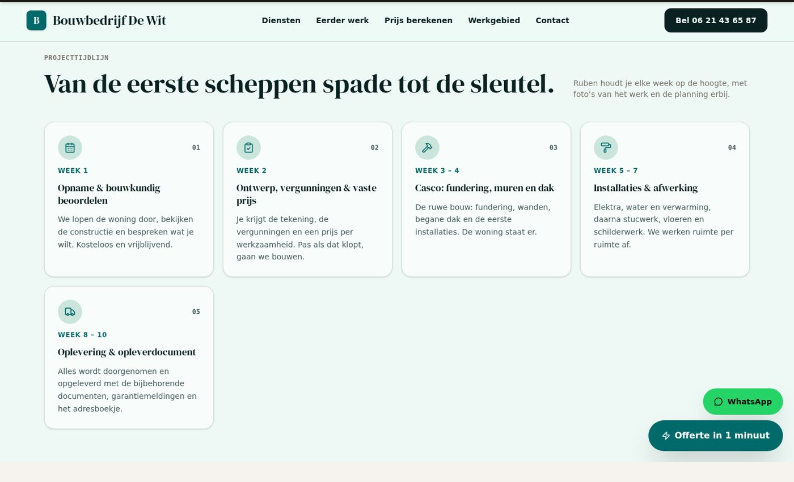

Een bedrijf van zijn eigen
Bouwbedrijf De Wit in Rotterdam: renovatie vanaf € 85 per m², een badkamer vanaf € 12.500, een bouwkundige inspectie van € 495. Eigen werkvoorbeelden, eigen keurmerken, eigen vragen bij de offerte.
Een aannemer verkoopt geen kozijnen maar een bouw. Hij heeft andere diensten, andere prijzen, andere foto's en vooral een ander verhaal: van de opname en de vergunningen, via het casco, tot de oplevering met de documenten. Vanaf nu staat dat verhaal in de gegevens van het vak, niet meer in het component.
Wat er verandert
De aannemer is geen kopie van de timmerman met andere woorden. Hij heeft zijn eigen diensten en prijzen, zijn eigen foto's, zijn eigen reviews, zijn eigen offertegragen — en zijn eigen vijf stappen in de projecttijdlijn.
Bouwbedrijf De Wit in Rotterdam: renovatie vanaf € 85 per m², een badkamer vanaf € 12.500, een bouwkundige inspectie van € 495. Eigen werkvoorbeelden, eigen keurmerken, eigen vragen bij de offerte.
Opname en beoordeling, ontwerp en vergunningen, het casco, de installaties en de afwerking, en dan de oplevering met het opleverdocument. Woorden die bij een timmerman niet bestaan.
Ook de kop boven de tijdlijn staat nu per vak. De timmerman belooft nog "van aanvraag tot oplevering in 2 weken"; de aannemer belooft "van de eerste scheppen spade tot de sleutel". De belofte van het ene vak lekt niet naar het andere.
Een vak zonder eigen stappen krijgt de algemene route: kennen, vaste offerte, uitvoeren, opleveren. Een site kan nooit breken omdat er een stap ontbreekt.
De werkkaart kent nu ook de aannemers. Je kunt de werkkaart op aannemers filteren en hun persoonlijke demo-link gebruiken, net als bij de andere vakken.
Negen vakken × vijf stijlen = 45 presets. De build schrijft 49 routes naar echte HTML en de sitemap telt 48 adressen mee. De bezoeker ziet dezelfde site op zijn telefoon zonder JavaScript.
Hoe het eruitziet

De site in beeld
Twee echte schermafbeeldingen van de gebouwde site: de bovenkant op een groot scherm en dezelfde pagina op een telefoon. Klik op een foto om hem groot te bekijken.


Let op De foto's in deze schermafbeeldingen zijn lokale plaatshouders. De site zelf laadt zijn foto's van Unsplash; in de sandbox is die dienst niet bereikbaar. Wat je hier ziet is de echte opmaak en de echte tekst.
De bestanden
| Bestand | Wat er verandert |
|---|---|
| src/data/tradesData.ts | Het negende vak: diensten, prijzen, foto's, reviews, offertegragen en de eigen tijdlijn. |
| src/data/timeline.ts | De titel en de toelichting per vak, plus de vijf stappen van de aannemer. |
| src/components/tools/ProjectTimeline.tsx | De kop en de toelichting komen uit de gegevens in plaats van uit het component. |
| src/data/timeline.test.ts | Zes proeven: compleetheid, terugval, de stappen van de timmerman en de route van de aannemer. |
| src/data/tradesData.test.ts | Een proef dat de aannemer een volwaardig vak is — en geen kopie van de timmerman. |
| src/types.ts | aannemer in de lijst van vakken. |
| src/data/prospects.ts | De aannemer in de werkkaart, met zijn eigen kleur en demonstratiestijl. |
| e2e/routes.spec.ts | Een proef die de aannemerpagina langsloopt en zijn tijdlijn controleert. |
| ROADMAP.md | Rij 7.30 af, rij 8.7 af. |
| CHANGELOG.md | Wat er veranderd is. |
| AGENTS.md | De regel: een vak is meer dan een paar velden. |
| docs/adding-a-sector.md | De handleiding: het id, de volgorde, de eigen tijdlijn en de fotopool. |
De proeven
src/data/timeline.test.tssrc/data/timeline.test.tssrc/data/timeline.test.tssrc/data/timeline.test.tssrc/data/tradesData.test.tse2e/routes.spec.ts/tmp/e2e_730.py · 25 checksbun run checkEerlijk
Een renovatie hangt af van de staat van het huis, van de constructie en van wat er onder het tapijt vandaan komt. De prijzen op de site zijn daarom een start punt; de vaste prijs komt na de opname.
"Week 3 – 4: het casco" is hoe de aannemer zijn werk plant, geen garantie die een rechter kan afdwingen. De bezoeker leest hem als een belofte; hij hoort hem zo te lezen.
De foto's van de aannemer komen uit Unsplash, net als bij alle andere vakken. Echt werk van dit bedrijf komt er zodra de aannemer zijn eigen foto's aanlevert (rij 8.12 van de roadmap).
De dakdekker heeft zijn dakcheck, de schilder zijn m²-calculator, de hovenier zijn tuinplan. De aannemer heeft de projecttijdlijn; zijn aanvragen komen binnen via de gewone offerte. Een eigen tool voor de aannemer staat niet op de roadmap.